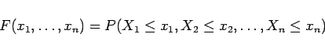

Inhalt Index DeskTop Bronstein

 Wahrscheinlichkeitsrechnung und Mathematische Statistik Wahrscheinlichkeitsrechnung Zufallsgrößen, Verteilungsfunktionen
Wahrscheinlichkeitsrechnung und Mathematische Statistik Wahrscheinlichkeitsrechnung Zufallsgrößen, Verteilungsfunktionen


Ein Zufallsvektor liegt vor, wenn jedes Elementarereignis darin besteht, daß n Zufallsveränderliche reelle Zahlenwerte  annehmen. Die zugehörige Verteilungsfunktion wird durch
annehmen. Die zugehörige Verteilungsfunktion wird durch
|  | (16.59) |
beschrieben. Sie heißt stetig, wenn eine Funktion  existiert, so daß
existiert, so daß
| (16.60) |
gilt. Die Funktion  heißt die Dichte der Verteilung oder Verteilungsdichte. Läßt man einige der Variablen
heißt die Dichte der Verteilung oder Verteilungsdichte. Läßt man einige der Variablen  nach Unendlich streben, so erhält man sogenannte Randverteilungen. Genauere Untersuchungen und Beispiele findet man in Lit. 16.4 und 16.26.
nach Unendlich streben, so erhält man sogenannte Randverteilungen. Genauere Untersuchungen und Beispiele findet man in Lit. 16.4 und 16.26.
Von unabhängigen Zufallsveränderlichen spricht man, wenn gilt:
| (16.61) |